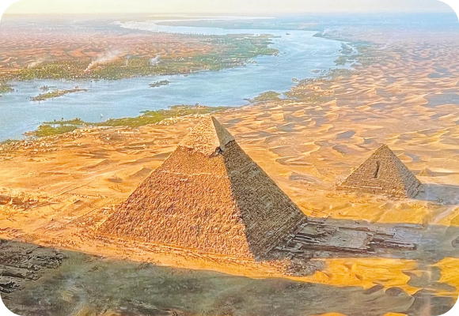
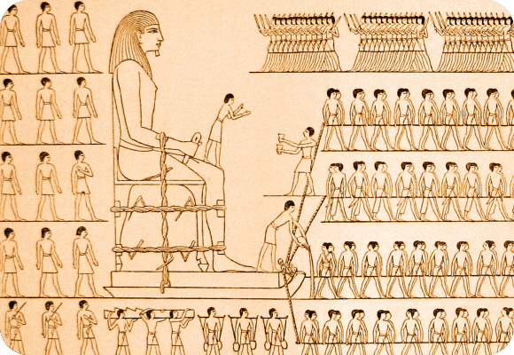
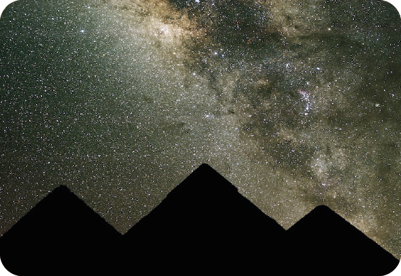
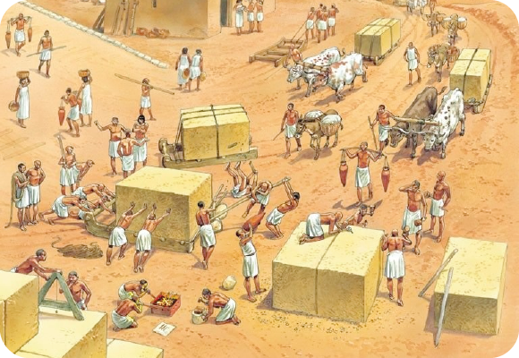
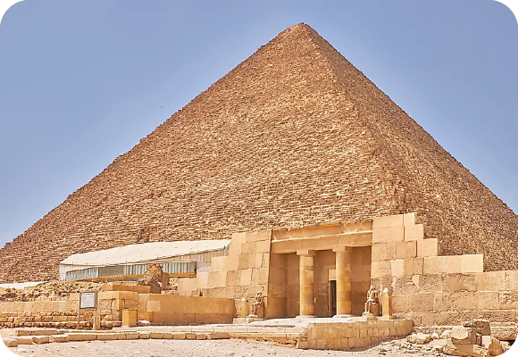
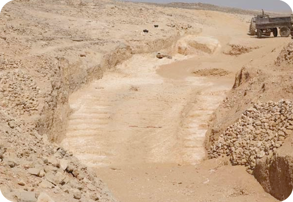

1. They weren't all pointed.
All pyramids aren't created equal. In fact, just as with many building types, there are distinct phases to pyramid construction. The earliest pyramids aren't the pointed structures we most commonly think of but were actually flat.
Many examples are found in the vast Saqqara burial ground located in what was Ancient Egypt's capital, Memphis. The pyramids here are the earliest known and include the Pyramid of Djoser. Built during the third dynasty and designed by architect Imhotep, it was constructed between 2630 BCE and 2611 BCE. It's considered one of the world's oldest monuments made of cut masonry and is not, in fact, pointed.
Instead, it's a step pyramid where Imhotep had mastabas (Egyptian tombs) of diminishing size stacked on top of one another. This typology is found in many cultures from the Borobudur Temple in Indonesia to the El Castillo pyramid built by the Maya in Chichen Itza.

2. Most pyramids were built west of the Nile.
Ancient Egyptian culture is full of symbolism and superstitions that guided decision making. So it should come as no surprise that even the location of the ancient pyramids were guided by mythology.
Most were built on the west bank of the Nile, and for a distinct reason. As the pyramids were the final resting places of pharaohs, it only makes sense they should reside where their souls can begin their journey into the afterlife. For ancient Egyptians, the afterlife and the sun were closely intertwined. Osiris, an Egyptian god closely connect with the afterlife, represented the strength of new life. Over time, he also became associated with the cycle of the sun and how it brought new growth from dormant seeds.
Thanks to this association, the setting sun came to symbolize death and the sun “died” in the west each night. The souls of the pharaohs were meant to connect with the setting sun before rising again in the morning, a symbol of eternal life. By placing pyramids to the west of the Nile, they lived right in the area that metaphorically signified death.

3. We're still figuring out how they were built.
One of the biggest mysteries about the Egyptian pyramids is the construction techniques used to erect them. The incredible feat of the Egyptians is all the more impressive when taking into consideration that over 2 million limestone and granite blocks were used to build the Great Pyramid of Giza. Each piece of masonry weighed about 2.5 tons (2.3 metric tons).
So how were these giant blocks moved? Unfortunately, the Egyptians didn’t leave behind written records, and many theories have been proposed over the years. A 2014 study theorized that it could be as easy as water and sand. A wall painting dating back to 1900 BCE depicts a procession of men pulling a large statue on a sled as one person stands at the front pouring water over sand. Though it was originally thought that the gesture was purely ceremonial, there is scientific evidence that this painting holds the key to unlocking the mystery of how they moved all that weight.
Researchers experimented pulling large amounts of weight on a sled across sand and found that when they added the right amount of water, the job was significantly easier. The dampness of the sand greatly reduced friction by up to as much as 50%, making it much more feasible to haul large amounts of weight.

4. The Egyptians used astronomy to guide construction.
According to a British Egyptologist, the stars were a guiding force in how the pyramids were aligned. Kate Spence of Cambridge University published research in 2000 that demonstrates how the Big Dipper and Little Dipper were used to align the pyramids in a north-south direction.
So accurate were their measurements that they only have a margin of error of up to 0.05 degrees. Interestingly, with this information in hand, it’s possible to date the pyramids using astronomical records.

5. They weren't built by slaves.
The long-held theory that the pyramids were built by slaves might not actually be true. It was the Greek historian Herodotus who helped spread the idea that slaves built the pyramids through his writing. It's a concept that was then propagated by Hollywood, but might not be true. In the 1990s, the graves of pyramid builders were discovered. Egyptologists are quite sure they were not slaves, but rather builders who came from lower income families.
Their burial in a tomb shows that their role in building the pyramids was an honor, and certainly was not a treatment that would have been given to slaves.

6. The Great Pyramid can tell time.
The Great Pyramid of Giza is not only the most recognized of Egypt's pyramids, it's also the only of the Seven Wonders of the Ancient World that's still standing. The Great Pyramid is impressive for many reasons, but one of the most interesting characteristics of this celebrated monument is that it can also tell time. The structure actually acts as an enormous sundial, with its shadow telling the hour by falling on marks made in the stone.
Of course, being the Great Pyramid, it couldn’t be just any old sundial. Its level of sophistication meant that it not only told time, but was able to signal solstices and equinoxes and therefore helped the Egyptians define the solar year.

7. Archaeologists are still uncovering the mysteries of the pyramids.
Egyptology is a highly active field, with researchers moving away from reading inscriptions, but continuing to excavate and use technology to answer the many mysteries still left to be revealed. For instance, the recent discovery of a 4,500-year-old ramp north of Luxor is giving scholars clues into how the ancient Egyptians may have hauled masonry long distances.
Many examples are found in the vast Saqqara burial ground located in what was Ancient Egypt's capital, Memphis. The pyramids here are the earliest known and include the Pyramid of Djoser. Built during the third dynasty and designed by architect Imhotep, it was constructed between 2630 BCE and 2611 BCE. It's considered one of the world's oldest monuments made of cut masonry and is not, in fact, pointed.
Close to the Saqqara burial site, the discovery of cat mummies and hundreds of wooden cat statues in a tomb also show just how much there still is to explore and uncover about the Ancient Egyptians.